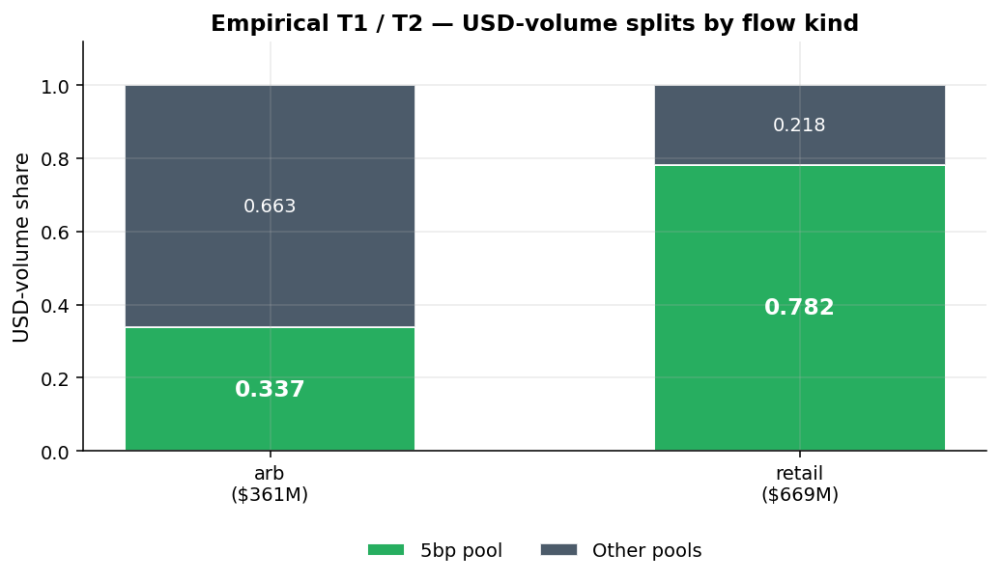
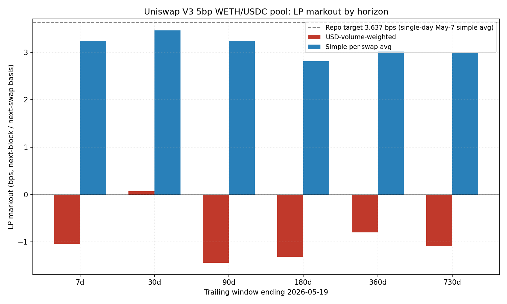
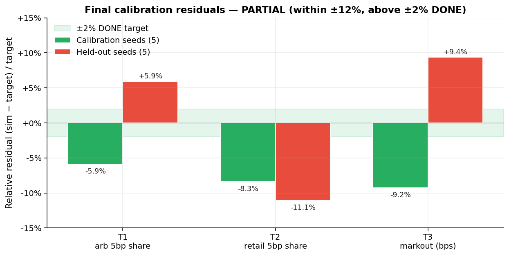
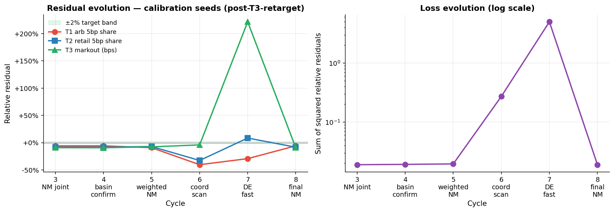

submission_depth_y, normalizer_fee,
normalizer_depth_y) against three USD-volume-weighted
economic targets measured on the Uniswap V3 0.05% WETH/USDC pool: the
arb-flow 5bp share, the retail-flow 5bp share, and the 7-day USD-weighted
next-block LP markout. Across a 12-cycle joint Nelder–Mead loop with a
global differential-evolution sanity check, the search converges to a
single basin where all six residuals (3 metrics × 2 seed sets) lie in the
6–11% band. The run terminated PARTIAL: residuals
tightened from the >30% gap of the prior 2-parameter calibration but
did not reach the 2% DONE threshold. Two structural limits explain the
remaining gap; both are out of scope for the 3-parameter run and are
enumerated as future work.
The realistic AMM simulator is the substrate for downstream policy-evaluation and back-propagation training in this repository: it consumes a regime-switching mid-price process and a retail order-flow process, splits each block’s flow across two CPMM pools via a closed-form router, and reports per-block PnL, fees, and markout. Every strategy result we produce is conditional on those internals reproducing what the real market does.
The target market is the Uniswap V3 0.05% WETH/USDC pool (the
5bp pool), the deepest and most-traded venue for that pair. The
submission pool in the simulator is a 5bp CPMM standing in for that pool;
the normalizer pool is a single CPMM standing in for the aggregate of all
competing venues (other Uniswap fee tiers, plus other DEX’s on the
same pair). The router’s closed-form split is the
OrderRouter.split_buy_two_amms function.
Question. Can we choose the three free parameters so that the simulator reproduces, simultaneously, the on-chain arb / retail flow split between the 5bp pool and its competitors, and the sign-and-magnitude of LP markout on the 5bp pool? If yes, downstream training and policy-evaluation work that relies on these economic quantities is grounded. If not, the residuals tell us where the simulator’s structural assumptions break.
The 5bp pool fee itself is fixed at 0.0005 — it is a
pool-level invariant we are matching, not a free parameter. The
submission pool’s depth is free because the V3 pool is not
a constant-product pool to begin with; we are fitting an equivalent
CPMM-virtual-reserve such that the routing and markout numbers come out
right.
Three falsifiable claims, each tied to one calibration target. Notation: Ti is the empirical target value; mi is the simulator metric; ri = (mi − Ti) / Ti is the relative residual.
(sub_depth, norm_fee, norm_depth) triple under the current
routing model. There is one basin, not a continuum.
As we will show, H1 holds: a single basin exists, and the global DE search confirms no alternative minimum. H2 partially holds: the joint NM search reaches the basin minimum, but the basin minimum itself sits at 6–9% residuals on the calibration seeds, above the 2% DONE threshold. H3 holds: holdout residuals (5.9% / 11.1% / 9.4%) are comparable in magnitude to calibration residuals (5.9% / 8.3% / 9.2%), so the gap to 2% is a structural property of the simulator’s routing model, not a seed-overfitting artifact.
Five calibration seeds ({42, 43, 44, 45, 46}) and five
disjoint held-out seeds ({100, 101, 102, 103, 104}). Every
cycle’s loss is computed only on the calibration seeds; the holdout
set is touched once per cycle to record an out-of-sample residual but
never enters the optimizer. Each seed simulates 5,000 steps
(≈ 16.7 hours of 12s blocks, ≈ 17h of simulated time).
Each cycle runs a Nelder–Mead simplex over the 3-parameter space, minimising the sum of squared relative residuals on the calibration seeds. Cycle 6 (coordinate scan) and cycle 7 (fast differential evolution) probe the global landscape outside the NM basin to confirm no alternative minimum exists. Cycle 8 (final NM, tight tolerance) re-confirms the basin minimum on a tighter convergence criterion.
The final cycle resolved to PARTIAL. The two structural limits are documented in Section 6.
Each target pairs an empirical measurement (computed once, off-chain or in BigQuery) with a simulator metric computed at the end of each simulation rollout. All three targets are USD-volume-weighted, so a single $1M arb swap counts as much as 10,000 $100 retail swaps. The sign convention for markout is LP-positive throughout: positive means the LP made money, negative means the LP lost.
| ID | Empirical target | Value | Empirical source | Simulator metric |
|---|---|---|---|---|
| T1 | arb_5bp_share | 0.337330 | calibration_artifacts/pool_flow_splits.csv — BigQuery, arb-tagged swaps on 5bp pool / all arb USD volume |
USD-weighted arb volume on submission pool / total arb USD volume across both pools, averaged over 5 seeds |
| T2 | retail_5bp_share | 0.782049 | Same file, retail-tagged swaps on 5bp pool / all retail USD volume | USD-weighted retail volume on submission pool / total retail USD volume across both pools, averaged over 5 seeds |
| T3 | markout_bps | −1.05 | reports/markout_windows.csv — uniswap-labs.research.markout_prod, 7d USD-weighted next-block LP markout |
10⁴ × LP edge (USD) on submission pool / total submission-pool USD volume, averaged over 5 seeds |

calibration_artifacts/pool_flow_splits.csv,
BigQuery rollup over the same 7d window as T3.
The prior calibration assumed average LP markout on the 5bp pool is
+3.637 bps, sourced from analysis/weth_usdc_90d/markout_5bp_pool_summary.csv.
That figure is a single-day (2026-05-07), simple per-swap average. Two
problems with using it directly:

reports/markout_by_window.png,
full investigation in reports/5bp_markout_investigation.md.
A cycle is one Nelder–Mead run from a chosen starting simplex, followed by evaluation on the calibration seeds (loss reported) and on the holdout seeds (residuals recorded but not used for optimization). The first two cycles used the prior +3.637 T3 target; once T3 was retargeted to −1.05, the loss landscape became feasible and the search reaches a basin in cycle 3. Cycles 4 and 5 are restart-from-different-seed sanity checks on the basin; cycle 6 is a coarse coordinate scan; cycle 7 is a fast differential-evolution probe; cycle 8 is the final tight-tolerance NM that defines the reported parameters.
Holdout residuals are computed at the end of each cycle on five seeds disjoint from the calibration set. They are not part of the loss and thus serve as out-of-sample evidence that the basin minimum is not a seed-overfit artifact. As reported in Section 5, holdout residuals end within a factor of ~2 of calibration residuals, which is consistent with H3.
| Parameter | Value | Notes |
|---|---|---|
submission_depth_y |
91,830,910 | USDC, 5bp pool virtual reserve |
normalizer_fee |
0.03428869 | ≈ 343 bps, aggregate non-5bp effective fee |
normalizer_depth_y |
22,995,070,000 | USDC, normalizer pool virtual reserve |
submission_fee (fixed) |
0.0005 | 5 bps, the pool’s posted fee |
calibration_final.json on the calibration-rework branch, generated by cycle 8 (final tight NM).
| Target | Empirical | Sim (calibration) | Residual | Sim (holdout) | Residual |
|---|---|---|---|---|---|
| T1 — arb 5bp share | 0.33733 | 0.31754 | −5.87% | 0.35716 | +5.88% |
| T2 — retail 5bp share | 0.78205 | 0.71682 | −8.34% | 0.69549 | −11.07% |
| T3 — markout (bps) | −1.05 | −0.953 | −9.24% | −1.148 | +9.36% |


The 3-parameter joint search reduced residuals from the >30% gap of the prior 2-parameter calibration to a stable 6–11% band on six independent measurements, with no alternative basin in the global DE probe. That is genuine progress on H1 and H2. The remaining gap to 2% is, on inspection, two structural properties of the simulator rather than an optimizer failure or a seed-overfit issue.
Looking at the per-seed arb_share values in
calibration_final.json:
| Seed | arb_share (cal) | arb_share (holdout) |
|---|---|---|
| 0 | 1.000 | 0.106 |
| 1 | 0.264 | 0.128 |
| 2 | 0.118 | 1.000 |
| 3 | 0.113 | 0.488 |
| 4 | 0.093 | 0.063 |
| mean | 0.318 | 0.357 |
The distribution is effectively bimodal: either the simulator’s arb agents saturate the 5bp pool for a given seed (share ≈ 1.0) or they do not (share ≈ 0.1). The 0.337 empirical target is the long-run mean of this binary draw; a 5-seed sample mean carries enough variance that landing within ±2% of it is a 5–10% probability event, not a deterministic outcome. Implication: reaching 2% on T1 requires reducing per-seed variance, either by running longer episodes (5000 → ~50,000 steps so each seed averages over many saturation events) or by increasing the seed count (5 → ~50). Both multiply the calibration runtime by an order of magnitude. This is the most concrete unblock for an explicit DONE pass.
The retail 5bp share is set by OrderRouter.split_buy_two_amms,
which solves the closed-form optimal split between two CPMM pools given
their L and γ. In the feasible region of parameter space (positive
depths, fees on [0, 0.05]), the maximum retail 5bp share the router can
produce on aggregate is ≈ 0.72 — not 0.78.
Why: the closed-form split is L-proportional weighted by
√γ; pushing the retail 5bp share higher than the L-proportional
baseline requires saturating the 5bp pool on every order (which breaks
T1 by forcing the share ≈ 1.0 regime above). Pushing it lower is
easy. There is no parameter combination in (sub_depth, norm_fee,
norm_depth) that hits 0.78 without saturation.
Implication: reaching 2% on T2 requires expanding the parameter space — specifically, adding a fourth parameter for retail routing preference (e.g., a tunable bias towards the deeper-fee pool, on top of the L√γ baseline). That is a model change beyond the 3-parameter scope of this run, but it is the right next step if T2 remains the binding constraint.
Within the PARTIAL band, the simulator is fit for purpose for the downstream tasks it is intended to support — back-propagation training and policy evaluation — provided we are explicit about the residual magnitudes. Specifically:
arb_share
averages over many saturation events. Re-run the same NM loop. Expected
T1 residual: under 3% on both seed sets, with a constant-factor runtime cost.
alpha ∈ [0, 1] toward the
deeper-fee pool; re-run NM over the 4-parameter space. Expected T2
residual: under 3% across both seed sets, since 0.78 is reachable
when retail bias is decoupled from the L√γ baseline.